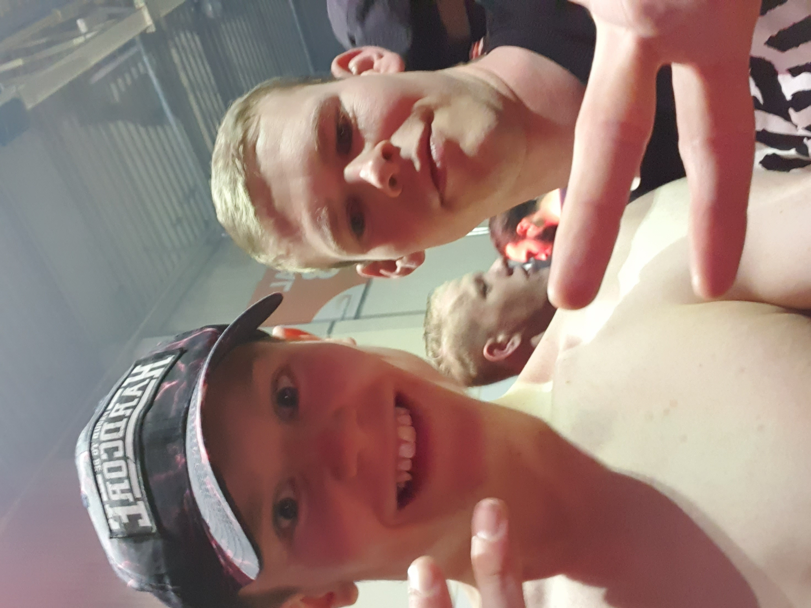

Wie is Dapsel
Mijn naam is Jarmo Rusch, ook wel bekend als Dapsel. Ik ben een enthousiaste jongeman met een passie voor menselijk gedrag en fantasiewerelden. Ik hou ervan om nieuwe dingen te leren en mijn interesses te verkennen. Hier is een beetje meer over mij:
Ik ben altijd nieuwsgierig geweest naar hoe mensen denken en waarom ze bepaalde dingen doen. Dit heeft me ertoe gebracht om boeken te lezen over psychologie en gedragswetenschappen. Daarnaast ben ik een fervent fan van fantasieverhalen, zowel in boeken als films. De magische werelden en epische avonturen trekken me altijd aan.
